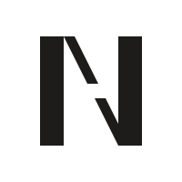
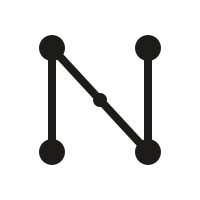
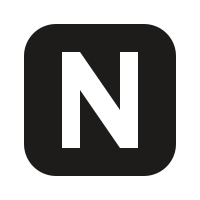
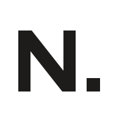
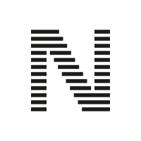
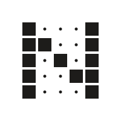

太さと欠け
太い縦線＝積み上げたデータ、細い斜線＝それをつなぐ説明。斜線の欠けは「余白があるから伝わる」こと。

ノードでつなぐN
Nの4つの角をノード、線をエッジに見立てたグラフ。ばらばらの点が「つながる」と意味になる。

枠の中のN
整理された「枠（データの器）」から、Nが余白として浮かび上がる。情報を整えると要点が見える。

N. の点＝最小単位
句点を四角いピクセルにした「N.」。最小単位のデータであり、伝えたいことを言い切る「。」でもある。

走査線のN
水平線だけでNを描く「ラスタ化」。世界をデータとして読み取り、線の集まりから形を立ち上げる。

ピクセルグリッドのN
5×5のマスで描くN。空きマスの小さな点が「グリッド＝構造」を見せる、画面の最小単位からできた形。